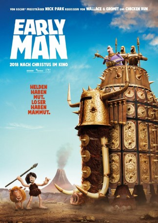

gesehen am 29.10.2018
gesehen am 29.10.2018Alternativ: Early Man gesehen am 29.10.2018
 
 IMDB-Wertung: 6.1 / 10
IMDB-Wertung: 6.1 / 10  Metascore:
Metascore: 
Der gewitzte Steinzeitmensch Dug und sein Kumpel, das prähistorische Wildschwein Hognob, leben mit ihrem Stamm urzeitlicher Kreaturen in einem idyllischen Tal. Als eines Tages die Bronzemenschen und mit ihnen der heimtückische und arrogante Anführer Lord Nooth das Tal für sich beanspruchen, wird Dug klar, dass es nun Zeit zu handeln ist! Dug und Hognob machen sich auf, ihre Heimat zu retten und finden dabei heraus, dass seine Vorfahren ein großes Talent besaßen…
Jahr: 2018
Dauer: 88 Minuten
FSK: 0
Land: USA Studio: LionsgateTonspuren: DTS - ,
Untertitel: Deutsch, Englisch,
Auflösung: 1080p (1920x1040) Größe: 8181 MB
Genre: Komödie, Abenteuer, Fantasy, Animation/Trick, Familie
Regisseur:  Nick Park
Nick Park
Drehbuch: Mark Burton, James Higginson, Mark Burton, Nick Park
Soundtrack: Harry Gregson-Williams, Tom Howe
Darsteller:
 Eddie Redmayne als Dug
Eddie Redmayne als Dug Tom Hiddleston als Lord Nooth
Tom Hiddleston als Lord Nooth Maisie Williams als Goona
Maisie Williams als Goona Timothy Spall als Chief Bobnar
Timothy Spall als Chief Bobnar Miriam Margolyes als Queen Oofeefa
Miriam Margolyes als Queen Oofeefa Rob Brydon als Message Bird / Brian / Bryan / Gonad the Gaul
Rob Brydon als Message Bird / Brian / Bryan / Gonad the Gaul Kayvan Novak als Dino / Jurgend
Kayvan Novak als Dino / Jurgend Richard Ayoade als Treebor
Richard Ayoade als Treebor Mark Williams als Barry
Mark Williams als BarryDatei: X:\Kinder Filme (A-F)\Early Man - Steinzeit bereit (2018, FSK0, 1920x1040).mkv seit 11.09.2018
Festplatte: Kinder-Filme+Trick
 Es gibt insgesamt 68 Filme in der Gruppe 'Kinder Filme (A-F)'
Es gibt insgesamt 68 Filme in der Gruppe 'Kinder Filme (A-F)'